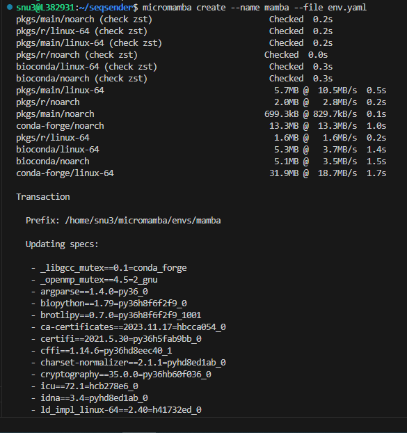
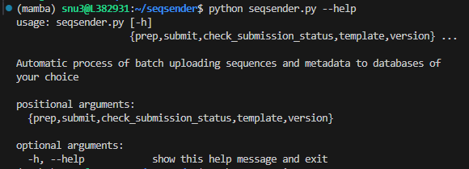
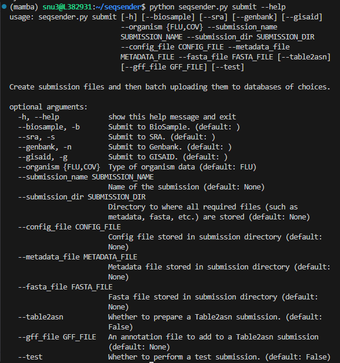
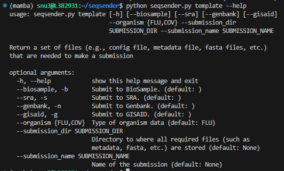

SOFTWARE REQUIREMENTS:
- Linux (64-bit) or Mac OS X (64-bit)
- Git version 2.25.1 or later
- Standard utilities: curl, tar, unzip
ADDITIONAL REQUIREMENTS:
See PRE-REQUISITES
and REQUIREMENT
FILES before proceeding to the next steps
Micromamba Installation
Here we recommend using micromamba to set up a
virtual environment to run seqsender.
Micromamba is a tiny, statically linked C++
reimplementation of mamba which is an alternative to conda. The tool
works as a standalone package manager that supports a subset of all
mamba or conda commands, but it also has its own separate command line
interfaces. For more information, visit micromamba
documentation.
To manually install, download and unzip the executable from the
official conda-forge package to your $HOME
directory using tar.
# Linux Intel (x86_64):
curl -Ls https://micro.mamba.pm/api/micromamba/linux-64/latest | tar -xvj bin/micromamba
# Linux ARM64:
curl -Ls https://micro.mamba.pm/api/micromamba/linux-aarch64/latest | tar -xvj bin/micromamba
# Linux Power:
curl -Ls https://micro.mamba.pm/api/micromamba/linux-ppc64le/latest | tar -xvj bin/micromamba
# macOS Intel (x86_64):
curl -Ls https://micro.mamba.pm/api/micromamba/osx-64/latest | tar -xvj bin/micromamba
# macOS Silicon/M1 (ARM64):
curl -Ls https://micro.mamba.pm/api/micromamba/osx-arm64/latest | tar -xvj bin/micromamba
After the extraction is completed, you can find the executable at
$HOME/bin/micromamba
- To quickly use
micromamba, you can simply run
export MAMBA_ROOT_PREFIX="$HOME/micromamba"
eval "$($HOME/bin/micromamba shell hook -s posix)"
- To persist using
micromamba, you can append the
following script to your .bashrc (or
.zshrc)
# >>> mamba initialize >>>
export MAMBA_EXE="$HOME/bin/micromamba";
export MAMBA_ROOT_PREFIX="$HOME/micromamba";
__mamba_setup="$("$MAMBA_EXE" shell hook --shell bash --root-prefix "$MAMBA_ROOT_PREFIX" 2> /dev/null)"
if [ $? -eq 0 ]; then
eval "$__mamba_setup"
else
alias micromamba="$MAMBA_EXE" # Fallback on help from mamba activate
fi
unset __mamba_setup
# <<< mamba initialize <<<
- To check the current version of
micromamba
micromamba --version
1.5.6
Set up a micromamba environment
- Clone this repository to your
$HOME directory
cd $HOME
git clone https://github.com/CDCgov/seqsender.git
-
CD to seqsender folder where the
env.yaml file is stored. Let’s create a virtual environment
named mamba that contains all dependencies needed to
run seqsender from the source file.
cd seqsender
micromamba create --name mamba --file env.yaml

- Activate the named environment – mamba
micromamba activate mamba
Run seqsender within the mamba
environment
First, let’s look a list of commands in seqsender.
Currently, there are five implemented commands in
seqsender: prep, submit,
check_submission_status, template,
version.
python seqsender.py --help

To see the arguments required for each command, for example, the
submit command, run
python seqsender.py submit --help

Submit a test submission
Rather than hastily jump in and submit a production
submission right away, we can utilize GISAID’s and NCBI’s
“TEST-SERVER” to upload a test submission
first. That way submitter can familiarize themselves with the submission
process prior to make a real submission.
Note: Duplicate test submissions will result in an
error. Please create new sequence names each time you plan to run test
submissions to avoid this issue.
Here we will go over the steps of preparing and batch uploading meta-
and sequence-data to GISAID and NCBI databases using a pre-processed
dataset provided with the software.
The template command will allow you to output examples
of metadata and config files so you can base your submission on prior to
upload a real submission. To get more help on the command, run
python seqsender.py template --help

python seqsender.py template \
--organism FLU \
-bsng \
--submission_dir $HOME \
--submission_name flu-test-submission
-
--organism specifies the type of data
to download. Currently, Influenza A Virus (FLU) and
SARS-COV-2 (COV) are the only two options. Additional
datasets for other organisms will be provided in future updates or
requests.
-
-bsng is a combination flag of
databases: Biosample (-b or
--biosample), SRA
(-s or --sra),
Genbank (-n or
--genbank), and GISAID
(-g or --gisaid). This combination
flag tells seqsender to generate an unified meta- and
sequence-data into one file so we can perform batch upload to all
databases simultaneously.
-
--submission_dir is the directory
where you store all of the submission histories.
-
--submission_name is the submission
folder inside the --submission_dir directory where it
contains all necessary files (such as config.yaml,
metadata.csv, sequence.fasta, raw reads,
etc.) in order to make a submission.
A quick look at the output files:

Here is the standard out of the command.
Generating submission template
Files are stored at: /home/snu3/flu-test-submission
Total runtime (HRS:MIN:SECS): 0:00:00.115140
2. Set up the config file – config.yaml
After the template is downloaded in (1), you can find
config.yaml in your local
$HOME/flu-test-submission directory. The
config.yaml yaml file provides a brief description about
the submission and contains user credentials that allow
seqsender to authenticate the database prior to upload a
submission.
Open that file with a text editor of your choice and fill in the
appropriate information about your submission.

NOTE:
- To submit to NCBI only, one can remove the GISAID Submission
(b) section from the config file. Vice versa, to submit to
GISAID only, just remove the NCBI Submission (a)
section.
-
Submission_Position determines the order of the
database in which we will submit first. For instance, if GISAID is set
as
1, seqsender will submit to GISAID first,
then after all samples are assigned with a GISAID accession number,
seqsender will proceed to submit to NCBI. This order of
submission ensures samples are linked correctly between the two
databases after submission.
-
Username and Password under the
NCBI Submission (b) section are the credentials used to
authenticate the NCBI FTP Server (not to mistake with
individual NCBI account). See PRE-REQUISITES
for more details.
ADDITIONAL REQUIREMENTS:
- If SRA is in your list of submitting databases, the
raw reads for all samples must be provided and stored in a subfolder
called
raw_reads inside your submission directory of
choice.
- If GISAID is in your list of submitting databases,
download the CLI package that associated with your organism of interest
(e.g,
Influenza A
Virus (FLU) or
SARS-COV-2
(COV)) from the GISAID platform and stored them in a subfolder
called
gisaid_cli inside your submission directory of
choice.
A quick look of where to store the downloaded GISAID
CLI package,

Important: Make sure you binary CLI package are
executable. To allow executable permissions, run
chmod a+x <your_gisaid_cli_binary>
3. Upload a test submission
python seqsender.py submit \
--organism FLU \
-bsng \
--submission_dir $HOME \
--submission_name flu-test-submission \
--config_file config.yaml \
--metadata_file metadata.csv \
--fasta_file sequence.fasta \
--test
-
--organism specifies the type of data
to upload. Currently, Influenza A Virus (FLU) and
SARS-COV-2 (COV) are the only two options.
-
-bsng is a combination flag of
databases: Biosample (-b or
--biosample), SRA
(-s or --sra),
Genbank (-n or
--genbank), and GISAID
(-g or --gisaid). This combination
flag tells seqsender to prep and submit to each given
database. See python seqsender.py submit --help for more
details.
-
--submission_dir is the directory
where you store all of the submission histories.
-
--submission_name is the submission
folder inside the --submission_dir directory where it
contains all necessary files (such as config.yaml,
metadata.csv, sequence.fasta, raw reads,
etc.) in order to make a submission.
-
--config_file is the config file
inside the --submission_name directory.
-
--metadata_file is the metadata file
inside the --submission_name directory.
-
--fasta_file is the fasta file inside
the --submission_name directory.
-
--test is used to submit to
“TEST-SERVER ONLY” . For production
submission, please remove this flag.
A quick look at the standard output.
Creating submission files for BIOSAMPLE
Files are stored at: /home/snu3/flu-test-submission/submission_files/BIOSAMPLE
Creating submission files for SRA
Files are stored at: /home/snu3/flu-test-submission/submission_files/SRA
Creating submission files for GENBANK
Files are stored at: /home/snu3/flu-test-submission/submission_files/GENBANK
Creating submission files for GISAID
Files are stored at: /home/snu3/flu-test-submission/submission_files/GISAID
Uploading submission files to NCBI-BIOSAMPLE
Performing a 'Test' submission
If this is not a 'Test' submission, interrupts submission immediately.
Connecting to NCBI FTP Server
Submission name: flu-test-submission
Submitting 'flu-test-submission'
Uploading submission files to NCBI-SRA
Performing a 'Test' submission
If this is not a 'Test' submission, interrupts submission immediately.
Connecting to NCBI FTP Server
Submission name: flu-test-submission
Submitting 'flu-test-submission'
Uploading submission files to GISAID-FLU
Performing a 'Test' submission with Client-Id: TEST-EA76875B00C3
If this is not a 'Test' submission, interrupts submission immediately.
Submission attempt: 1
Uploading successfully
Status report is stored at: /home/snu3/flu-test-submission/submission_report_status.csv
Log file is stored at: /home/snu3/flu-test-submission/submission_files/GISAID/gisaid_upload_log_attempt_1.txt
4. Check the status of a submission
After a submission is submitted, you can routinely check the status
of the submission.
python seqsender.py check_submission_status \
--organism FLU \
--submission_dir $HOME \
--submission_name flu-test-submission \
--test
-
--organism specifies the type of data.
Currently, Influenza A Virus (FLU) and
SARS-COV-2 (COV) are the only two options.
-
--submission_dir is the directory
where you store all of the submission histories.
-
--submission_name is the submission
folder inside the --submission_dir directory where it
contains all necessary files (such as config.yaml,
metadata.csv, sequence.fasta, raw reads,
etc.) in order to make a submission.
-
--test is used to submit to
“TEST-SERVER ONLY” . For production
submission, please remove this flag.
Here is a quick look at the standard output:
Checking submission status for:
Submission name: flu-test-submission
Submission organism: FLU
Submission type: Test
Submission database: GISAID
Submission status: processed-ok
Submission database: BIOSAMPLE
Pulling down report.xml
Submission status: submitted
Submission database: SRA
Pulling down report.xml
Submission status: submitted
Submission database: GENBANK
Submission status: ---
Total runtime (HRS:MIN:SECS): 0:00:08.213955
Here is a list of submission statuses and its meanings:
- If at least one action has Processed-error,
submission status is Processed-error
- Otherwise if at least one action has Processing
state, the whole submission is Processing
- Otherwise, if at least one action has Queued state,
the whole submission is Queued
- Otherwise, if at least one action has Deleted
state, the whole submission is Deleted
- If all actions have Processed-ok, submission status
is Processed-ok
- Otherwise submission status is Submitted
Before you can perform a test submission with your own
dataset, make sure you have the required files (such as
config.yaml, metadata.csv,
sequence.fasta, raw reads, etc.)
already prepared and stored in the submission directory of your
choice.
- To prep for FLU submissions, select one of the databases below for
more details
BioSample
SRA
Genbank
GISAID
Multiple
databases
- To prep for COV submissions, select one of the databases below for
more details
BioSample
SRA
Genbank
GISAID
Multiple
databases
After you have finished prepping for your database of choices in
(a) or (b), create a submission folder and
store all your metadata and sequence files there.
Here is a quick look at the folder structure
Finally, make sure additional requirements below are met before you
can proceed to the next steps.
- If SRA is in your list of submitting databases, the
raw reads for all samples must be provided and stored in a subfolder
called
raw_reads inside your submission directory of
choice.
- If GISAID is in your list of submitting databases,
download the CLI package that associated with your organism of interest
(e.g,
Influenza A
Virus (FLU) or
SARS-COV-2
(COV)) from the GISAID platform and stored them in a subfolder
called
gisaid_cli inside your submission directory of
choice.
Here is an example of where to place the GISAID CLI
package.
Important: Make sure you binary CLI package are
executable. To allow executable permissions, run
chmod a+x <your_gisaid_cli_binary>
2. Upload a test submission
After all files are (i) are prepared, we can go ahead and upload the
submission
python seqsender.py submit \
--organism FLU \
-bsng \
--submission_dir $HOME \
--submission_name flu-test-submission \
--config_file config.yaml \
--metadata_file metadata.csv \
--fasta_file sequence.fasta \
--test
-
--organism specifies the type of data
to upload. Currently, Influenza A Virus (FLU) and
SARS-COV-2 (COV) are the only two options.
-
-bsng is a combination flag of
databases: Biosample (-b or
--biosample), SRA
(-s or --sra),
Genbank (-n or
--genbank), and GISAID
(-g or --gisaid). This combination
flag tells seqsender to prep and submit to each given
database. See python seqsender.py submit --help for more
details.
-
--submission_dir is the directory
where you store all of the submission histories.
-
--submission_name is the submission
folder inside the --submission_dir directory where it
contains all necessary files (such as config.yaml,
metadata.csv, sequence.fasta, raw reads,
etc.) in order to make a submission.
-
--config_file is the config file
inside the --submission_name directory.
-
--metadata_file is the metadata file
inside the --submission_name directory.
-
--fasta_file is the fasta file inside
the --submission_name directory.
-
--test is used to submit to
“TEST-SERVER ONLY” . For production
submission, please remove this flag.
A quick look at the standard output.
Creating submission files for BIOSAMPLE
Files are stored at: /home/snu3/flu-test-submission/submission_files/BIOSAMPLE
Creating submission files for SRA
Files are stored at: /home/snu3/flu-test-submission/submission_files/SRA
Creating submission files for GENBANK
Files are stored at: /home/snu3/flu-test-submission/submission_files/GENBANK
Creating submission files for GISAID
Files are stored at: /home/snu3/flu-test-submission/submission_files/GISAID
Uploading submission files to NCBI-BIOSAMPLE
Performing a 'Test' submission
If this is not a 'Test' submission, interrupts submission immediately.
Connecting to NCBI FTP Server
Submission name: flu-test-submission
Submitting 'flu-test-submission'
Uploading submission files to NCBI-SRA
Performing a 'Test' submission
If this is not a 'Test' submission, interrupts submission immediately.
Connecting to NCBI FTP Server
Submission name: flu-test-submission
Submitting 'flu-test-submission'
Uploading submission files to GISAID-FLU
Performing a 'Test' submission with Client-Id: TEST-EA76875B00C3
If this is not a 'Test' submission, interrupts submission immediately.
Submission attempt: 1
Uploading successfully
Status report is stored at: /home/snu3/flu-test-submission/submission_report_status.csv
Log file is stored at: /home/snu3/flu-test-submission/submission_files/GISAID/gisaid_upload_log_attempt_1.txt
3. Check the status of a submission
After a submission is submitted, you can routinely check the status
of the submission.
python seqsender.py check_submission_status \
--organism FLU \
--submission_dir $HOME \
--submission_name flu-test-submission \
--test
-
--organism specifies the type of data.
Currently, Influenza A Virus (FLU) and
SARS-COV-2 (COV) are the only two options.
-
--submission_dir is the directory
where you store all of the submission histories.
-
--submission_name is the submission
folder inside the --submission_dir directory where it
contains all necessary files (such as config.yaml,
metadata.csv, sequence.fasta, raw reads,
etc.) in order to make a submission.
-
--test is used to submit to
“TEST-SERVER ONLY” . For production
submission, please remove this flag.
Here is a quick look at the standard output:
Checking submission status for:
Submission name: flu-test-submission
Submission organism: FLU
Submission type: Test
Submission database: GISAID
Submission status: processed-ok
Submission database: BIOSAMPLE
Pulling down report.xml
Submission status: submitted
Submission database: SRA
Pulling down report.xml
Submission status: submitted
Submission database: GENBANK
Submission status: ---
Total runtime (HRS:MIN:SECS): 0:00:08.213955
Here is a list of submission statuses and its meanings:
- If at least one action has Processed-error,
submission status is Processed-error
- Otherwise if at least one action has Processing
state, the whole submission is Processing
- Otherwise, if at least one action has Queued state,
the whole submission is Queued
- Otherwise, if at least one action has Deleted
state, the whole submission is Deleted
- If all actions have Processed-ok, submission status
is Processed-ok
- Otherwise submission status is Submitted
Any questions or issues? Please report them on our
Github
issue tracker.